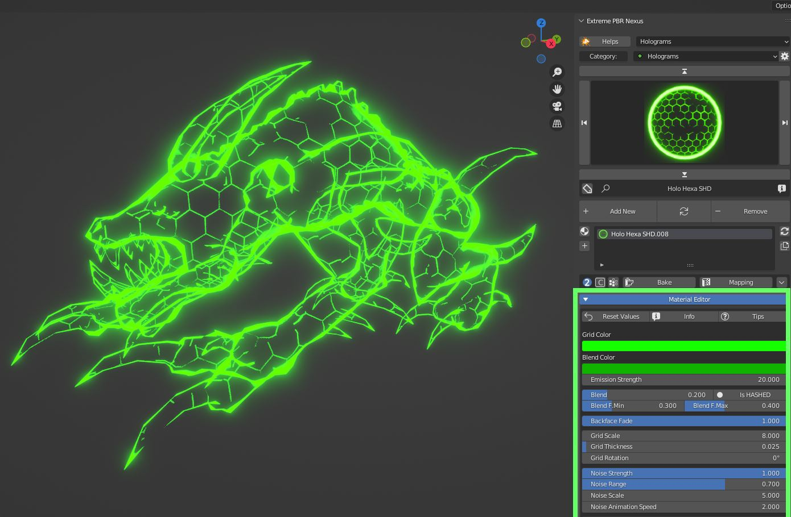
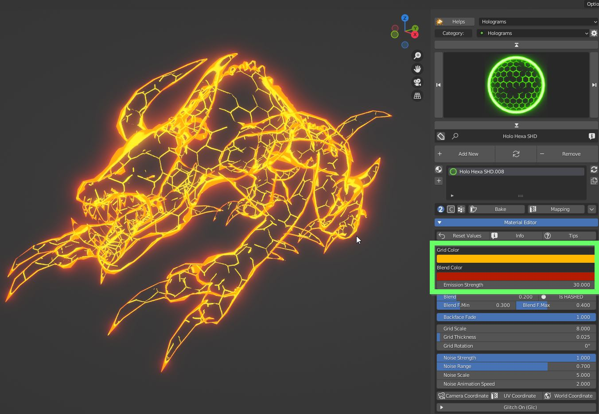
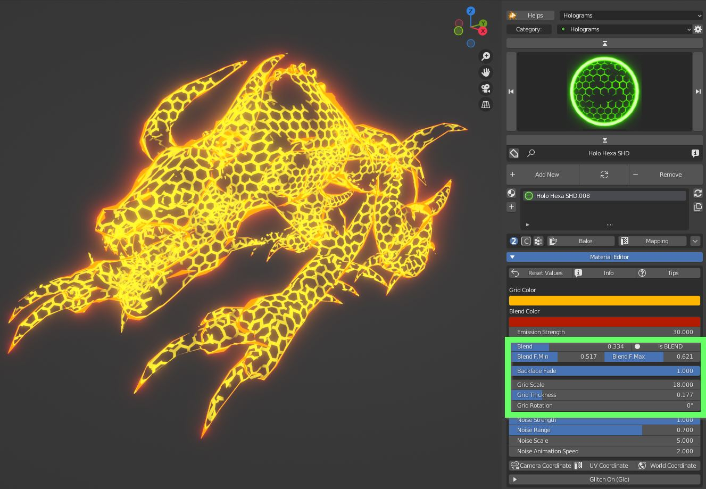
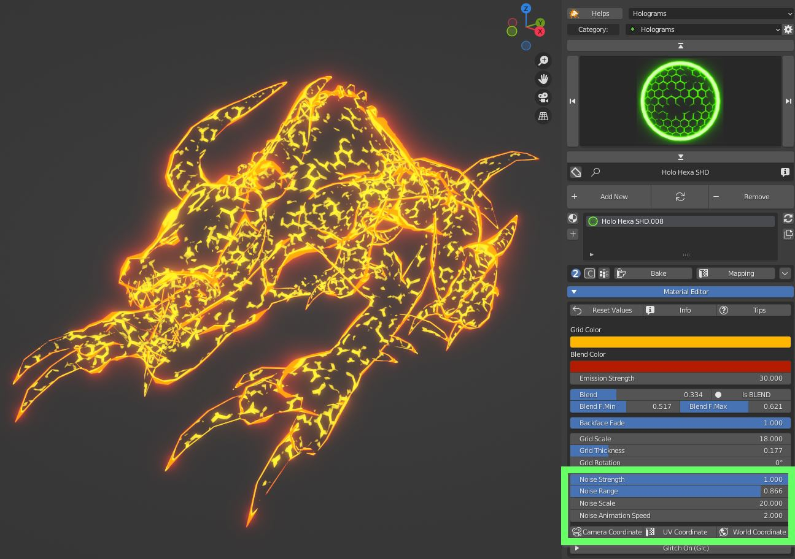

Extreme PBR Expansion
This section is dedicated to the use of the Cyber Holograms expansion for Extreme PBR.
If you want to use Cyber Holograms in Asset Browser go to the dedicated section: Asset Browser Library
Note
Extreme PBR is distributed separately and is an addon to itself, here is the link to Extreme PBR:
Youtube Tutorial
Questo tutorial ti aiuterà a capire come usare Cyber Holograms in Extreme PBR.
Material Editor
Each Holographic material applied with Extreme PBR will have the advantage of having a dedicated and specially built editing interface, each material has been designed to be as simple as possible to use and at the same time have maximum control possible from the Extreme PBR panel.
{kind=link}
Color
You can change the colors and the emission strength
{kind=link}
Blend
You can set the blending between the Grid and the Contour area, trim the sharpness of the blending area, set the transparency setting of Eevee material, fade the faces with inverted normals
{kind=link}
Modify Grid
You can set the scale of the grid, its thickness and rotation
Animate holograms
All Hologram materials are animated by a procedural texture. Press play and trim the strength, the range, the scale and the speed of the animation
{kind=link}
The effect can be binded to Camera coordinates, UV coordinates or World coordinates
Animated Glitch
On top of texture animation you can add a Glitch effect, which will turn off some bands of the model on a random fashion or even shut down the whole material.
Glc Speed (Full) is the base value of the speed of the whole Glitch effect
Glc Shutting down is the amount of the total shutdown of the material
Glc OSC Noise scale is a multiplier of the overall speed
Glc Phase shifts in time the noise
Glc Bands speed controls the speed of bands only
Glc Bands Strength controls the strength of the Bands effect
Glc Bands scale sets the scale of the bands
Glc Bands Thickness sets the proportions between bands and unaffected areas
Glc Bands distortion adds a stretching distortion to make the bands less readable
{kind=link}